AI Academy · Level 2 · Grade 7 · Week 25 · Student lesson
Text as Pieces
Learn to understand, design, build, test and explain AI systems responsibly.
Project: Transparent Book Recommender
Before you start
AI-1 Week 5: a representation needs agreed encoding rules.
Plan time to read, investigate and explain. Keep predictions separate from observations.
Student lesson · 1 of 17
Your mission
Your learning target
I can encode and decode text under an explicit toy vocabulary.
I can explain how segmentation changes sequence length.
I can handle unsupported characters without silently deleting information.
Remember before reading
Close your notes first. A rough first answer helps us choose the right starting point; it is not a score for your ability.
Without opening the old lesson, explain one key idea from Feedback Loops. Give an example and a mistake that the idea helps you avoid.
Without opening the old lesson, explain one key idea from Nearest Neighbor Reasoning. Give an example and a mistake that the idea helps you avoid.
Without opening the old lesson, explain one key idea from Sampling and Representation. Give an example and a mistake that the idea helps you avoid.
After trying, check the relevant lesson or ask your teacher. Change the part of your explanation that the evidence shows was wrong.
Week 25: Text as Pieces
Language systems process tokens and patterns rather than whole human meanings.
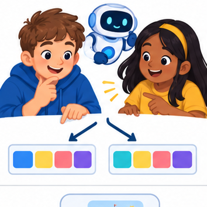
THINKER MISSION
Tokenize tricky phrases and compare alternate splits.
Thinker name and date:
Readiness for the connected explanation
What information conditions a next-token distribution?
This week’s end goal
By the end, I can encode and decode text using a specified vocabulary and matching rule.
Student lesson · 2 of 17
Notice the evidence
PICTURE STORY
Notice → Predict → Explain
Begin with visible evidence. Do not explain more than the picture and information support.
MYSTERY
The learners must use text as pieces to solve a problem. What information do they have? What decision or calculation do they make? What would count as evidence that it worked?
Three observations (what you can point to):
My prediction and the clue supporting it:
A closer explanation
Tokens need not be words. A classroom tokenizer can use an exact, case-sensitive vocabulary and greedily choose the longest matching token from left to right. This is a toy rule, not a claim about every production tokenizer. Define IDs: 0=end, 1=cat, 2=c, 3=a, 4=t, 5=s, 6=space, 7=sat. The space token represents one literal space. The end token is a special terminator, not ordinary text.
At each position choose the longest matching ordinary token. If no token matches, stop and report the unsupported character and its position. Do not delete the character or guess a replacement. IDs identify entries; a larger ID does not mean a token is more valuable or more similar.
Student lesson · 3 of 17
See how it works
VISUAL MECHANISM
Input → Process → Output
Trace the information. At each stage, ask what changed and how you could test it.
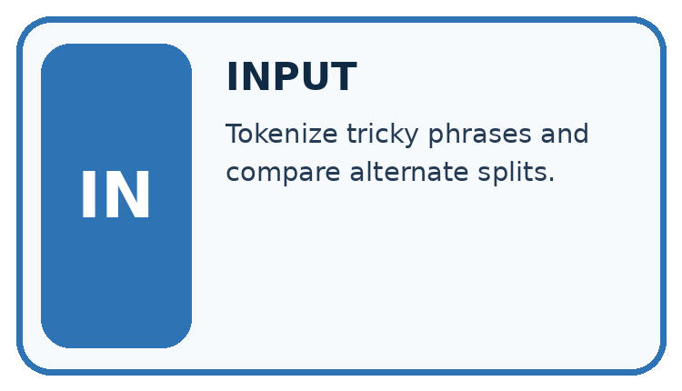
↓
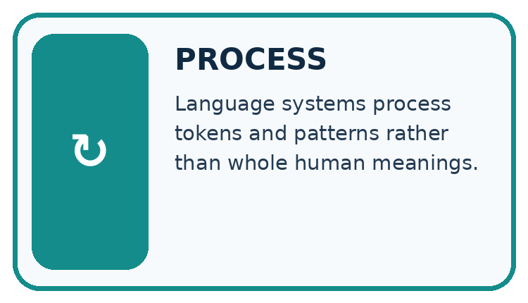
↓
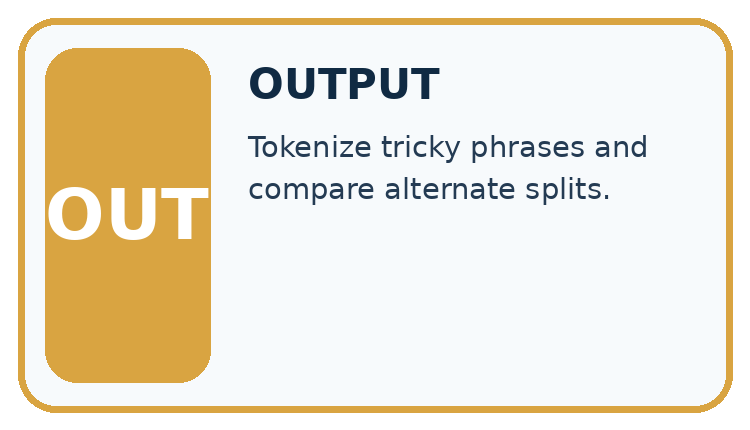
Which stage could fail even when the other two are correct? Explain:
A closer explanation
| Remaining text | Chosen token | ID |
|---|---|---|
| cats sat | cat | 1 |
| s sat | s | 5 |
| sat | space | 6 |
| sat | sat | 7 |
The encoding of cats sat is [1,5,6,7], followed by [0] only if the protocol appends an end token. Decoding concatenates the ordinary token strings to recover cats sat. Count four text tokens, or five sequence items with the end marker included; always state the counting convention. The two written words do not imply two tokens.
Keep the evidence roles separate
Connect the picture and the explanation
Point to the input, the deciding step and the result in this week’s visual. Explain the same step in ordinary words. A picture helps when you can say what each part represents.
Student lesson · 4 of 17
Compare the cases
CASE GALLERY
Four Tests, Four Kinds of Evidence
A system is not understood until it survives more than one comfortable example.


NORMAL CASE: predict and name evidence. BOUNDARY CASE: predict and name evidence.


MISSING INFORMATION: predict and name evidence. TRANSFER CASE: predict and name evidence.
Which case is most likely to reveal a hidden assumption? Why?
Change one thing in the pictured case
Change: Use a character vocabulary covering b,o,k,s and space instead.
Prediction: The same phrase uses ten character tokens.
Reason: There are five letters, one space and four letters; its decoded text remains unchanged.
Student lesson · 5 of 17
Words that unlock the idea
VOCABULARY LAB
Words You Can Use to Reason
A definition matters when you can recognize the idea, use it, and contrast it with a near-miss.

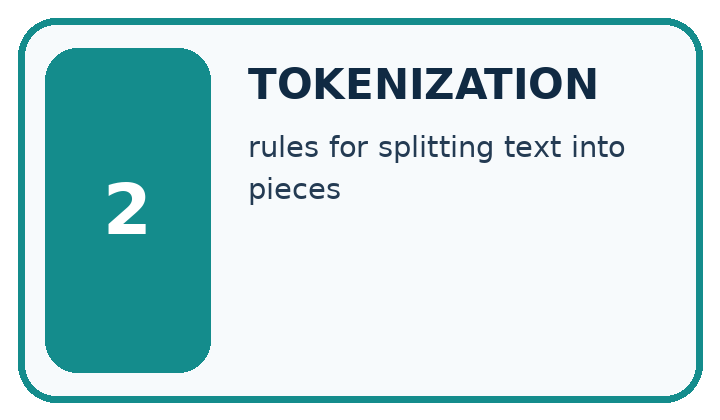
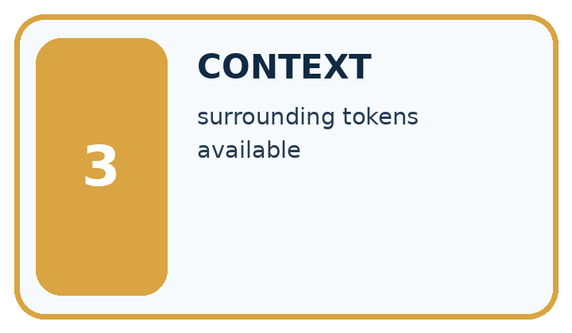
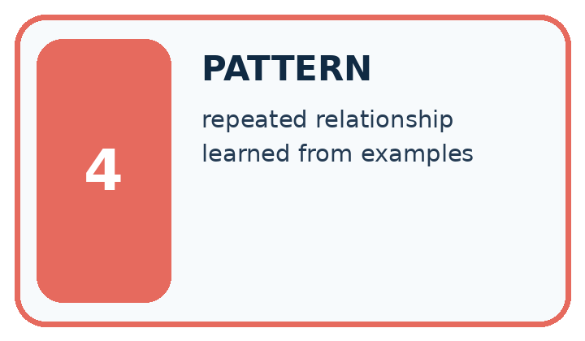
| Word | My own example | Not this / boundary |
|---|---|---|
| token | A unit of encoded text processed by a language model, which may be a word, part of a word or punctuation. | |
| tokenization | Converting text into the token units of a particular tokenizer. | |
| context | Information available around a task that helps interpret or answer it. | |
| pattern | A relationship or regularity observed in examples. |
Words used in the closer explanation
| Word | Meaning |
|---|---|
| Vocabulary | The permitted tokens and their identifiers |
| Encoding | Mapping source text into a token sequence under a specified rule |
| Decoding | Mapping a token sequence back to text under a specified rule |
Student lesson · 6 of 17
Follow a worked example
WORKED EVIDENCE
Reason Step by Step
Predict first. Then check each step. A correct answer without visible reasoning is incomplete evidence.
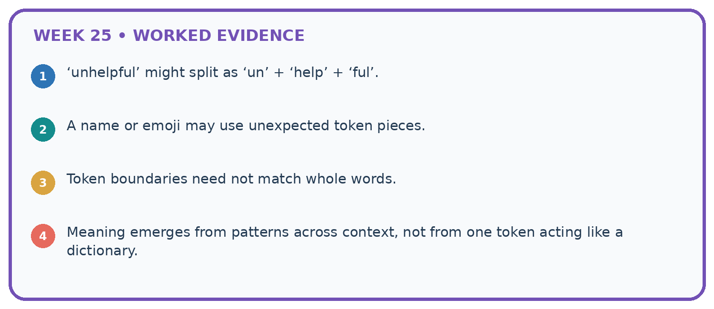
1. ‘unhelpful’ might split as ‘un’ + ‘help’ + ‘ful’.
2. A name or emoji may use unexpected token pieces.
3. Token boundaries need not match whole words.
4. Meaning emerges from patterns across context, not from one token acting like a dictionary.
Recalculate, retrace, or restate the reasoning in your own representation:
CHECK Did the evidence answer the exact question? Did the total, path, or source record stay consistent?
A closer explanation
A character-only vocabulary c,a,t,s,space could encode cats sat as c,a,t,s,space,s,a,t: eight text tokens. The original vocabulary uses four. Both decode to the same source text. Sequence length is a property of the text, vocabulary and encoding rule together. Counts from different tokenizers are not automatically comparable.
In this vocabulary, sat is chosen over s because it is longer. The toy longest-match rule is defined explicitly. Real tokenizers may use different algorithms, byte encodings and special-token policies. Never infer an unknown tokenizer’s count from word count alone.
Learn from the worked case
Cover the result before checking it. Say what is given, choose the procedure, and follow one step at a time. Then uncover the result and explain your first mismatch. Ask why a step is allowed, not only what number it produces.
A pictorial worked case: Text as Pieces
A fictional tokenizer converts a short catalogue phrase into tokens.
The facts we will use
Vocabulary entries: book, books and the space character. At each position choose the longest matching entry; preserve the actual space.
Text is “books book”. Exclamation marks have no token; zero-based character positions are used.
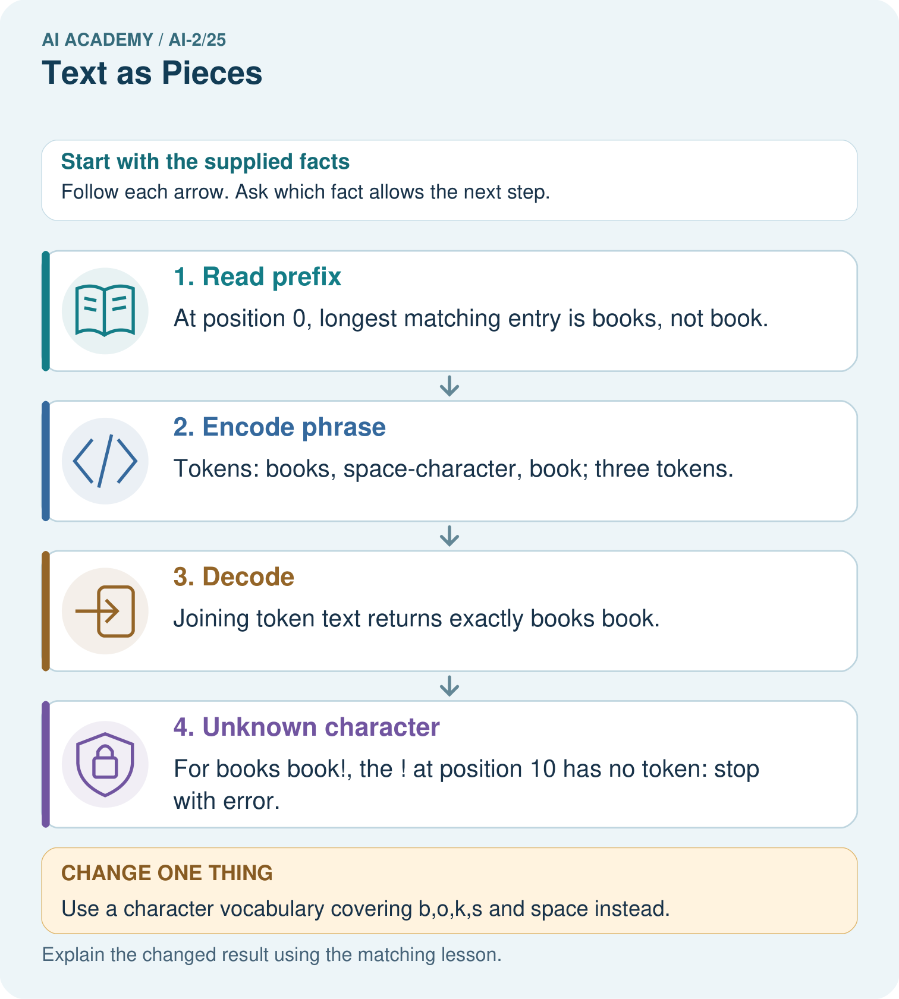
Read the picture one step at a time
Why this result follows
A token is defined by the vocabulary and encoding rule; it need not be one word or one character. Longest matching matters where vocabulary entries overlap. Counting text tokens here does not count letters. Preserve spaces during decoding so the reconstructed text matches the original exactly.
What this example does not establish
This deterministic toy tokenizer omits real subword training, Unicode handling and model-specific special tokens.
Read the labelled picture: Why is the unknown ! at position 10 rather than position 9?
Change one thing: Use a character vocabulary covering b,o,k,s and space instead. Predict the result before checking the explanation. What remains the same?
Student lesson · 7 of 17
Find and repair a mistake
ERROR DETECTIVE
Compare → Diagnose → Repair
Do not patch the answer. Find the earliest unsupported assumption, wrong step, or weak evidence.
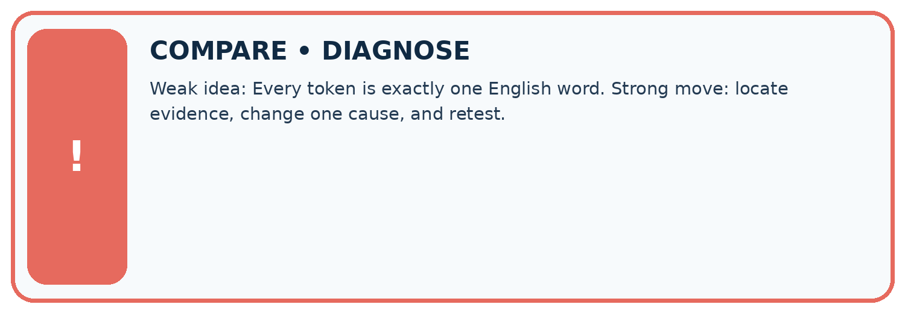
| Evidence record | Expected | Actual | Likely cause / next test |
|---|---|---|---|
| normal case | works | ||
| boundary case | stated rule | ||
| missing input | safe response | ||
| fresh transfer | generalizes |
Repair one cause. Why is this repair better than changing several things?
A closer explanation
Decoding round trips check representation, not factual meaning. A supported spelling can be false; an unsupported character can be important. Record the vocabulary version, rule and special-token convention when comparing counts or reproducing model inputs. Whitespace, case and punctuation are part of this exact toy input contract.
Student lesson · 8 of 17
Practise together
LOGIC STUDIO
Trace Before You Run
Block code, pseudocode, tables, and diagrams are different ways to expose the same reasoning.

SET evidence_record PREDICT expected_result RUN one normal case and one boundary case COMPARE actual_result with expected_result IF different: locate first cause; change one factor; RETEST EXPLAIN result, limitation, and next safe step
Trace one input. Which line changes the state or chooses a path?
A closer explanation
Supported case: cat encodes [1]; c at encodes [2,6,3,4]. A space changes both the character sequence and the possible matches. The input Cat is unsupported at position 0 because uppercase C has no entry. The input cat! encodes cat, then fails on ! at position 3; a partial encoding must not be reported as complete success.
Practise with less help: Encode and decode
Use workbook W2 for the connected example “Tokenisation and vocabulary”. First fill the input and rule boxes. Try the middle steps before asking for a hint. After a hint, try the next step yourself.
| Plan | Do | Check |
|---|---|---|
| What is given? Which rule or procedure applies? | Record each intermediate step. | Does the result follow? What remains unknown? |
Explain your trace to a partner. Your partner points to one step to check. Swap roles on the next case. Each person writes their own explanation.
Check your reasoning
Use the worked case for Tokenisation and vocabulary. Proposed explanation: “A token always equals a word”. Decide whether this explanation is supported. Point to the step or supplied fact that decides; explain your repair if needed.
Answer on your own before discussion. If you are unsure, say which step you need help with.
Explain the picture
Why is the unknown ! at position 10 rather than position 9?
This is supported practice. Keep the separately named independent case for an attempt before feedback.
Student lesson · 9 of 17
Run the investigation
EVIDENCE LAB
Predict → Test → Record → Explain
Keep expected and actual results separate. Surprises are useful data when recorded honestly.
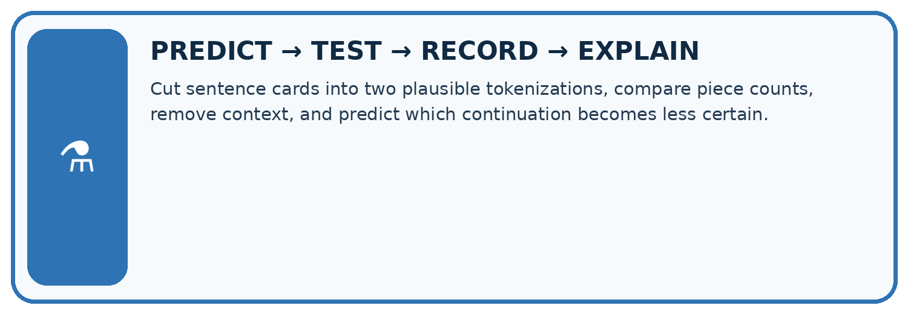
Cut sentence cards into two plausible tokenizations, compare piece counts, remove context, and predict which continuation becomes less certain.
| Test / input | Prediction | Actual | Evidence / calculation | Change or keep? |
|---|---|---|---|---|
| normal | ||||
| boundary | ||||
| missing | ||||
| fresh transfer |
What did the hardest test teach you that the normal test did not?
Plan → try → check
Before trying: what do I expect, and why? While trying: which step could first go wrong? Afterwards: what did I actually observe, and what should change? Keep “not run” if you only traced the procedure.
Student lesson · 10 of 17
Build your understanding
MASTERY
From Knowing the Word to Owning the Idea
Move upward only when you can produce evidence without copying the worked example.

1 • NAME: Define the concept without repeating the textbook.
2 • TRACE: Show the information, state, branch, calculation, or evidence path.
3 • APPLY: Solve a different example independently.
4 • CHALLENGE: Find a boundary case, counterexample, or unfair outcome.
5 • EXPLAIN LIMITS: Say when the result should not be trusted or used alone.
My strongest evidence of independent understanding:
Student lesson · 11 of 17
Connect your project
CUMULATIVE PROJECT
Transparent Book Recommender
Every week adds one inspectable piece. The system must show how it reached a result.
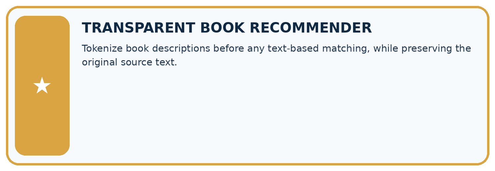
THIS WEEK’S CHECKPOINT Tokenize book descriptions before any text-based matching, while preserving the original source text.
SYSTEM MAP Reader need → allowed inputs → transparent rule or score → ranked candidates → explanation → test record → human decision
What will you add, change, or verify in the project this week?
What should remain under human control?
RESPONSIBLE DESIGN Collect only necessary information. Show uncertainty and limits. Never confuse a ranking with a fact about a person.
Evidence for your project
Document the recommender’s text representation and unknown-token behavior rather than assuming every model counts words identically.
Student lesson · 12 of 17
Show what you know
INDEPENDENT MASTERY PROOF
Explain • Transfer • Test • Defend
Complete this page without copying the worked example. Your reasoning matters more than decoration.
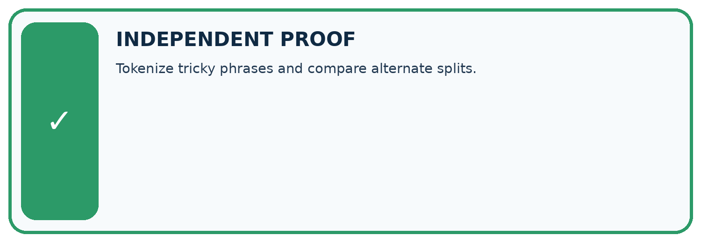
CHALLENGE Tokenize tricky phrases and compare alternate splits.
1. My fresh example, trace, calculation, or design:
2. My evidence that it works (include a boundary or missing-data case):
3. One limitation, fairness concern, or situation needing human review:
SELF-CHECK □ I explained the mechanism □ I used evidence □ I tested a fresh case □ I named a limitation □ I can answer ‘why?’
Student lesson · 13 of 17
Study a complete case
Week 25 Worked case
Use the supplied details to practise the weekly concept before attempting the independent question. This case extends the illustrated lesson.
The situation
Toy tokenizer A splits rainbows as [rain][bow][s]; B uses [rainbows].
The question
Count tokens and state the limit of the example.
Worked explanation
Three versus one. Token count depends on tokenizer; tokens need not equal words or letters.
Explain it in your own words
Which detail supports the answer, and why does it matter?
Trace the supplied case visually
One word can have different token counts
| Evidence or stage | Value or result |
|---|---|
| Tokenizer A | rain / bow / s |
| Tokenizer B | rainbows |
Toy tokenizer A splits rainbows as [rain][bow][s]; B uses [rainbows].
Count tokens and state the limit of the example.
Three versus one. Token count depends on tokenizer; tokens need not equal words or letters.
Student lesson · 14 of 17
Try a new case independently
Independent case: Trace a new input independently
Under the original vocabulary encode sat cats, decode it and count text tokens. Then trace sat cat! and state the exact failure position using zero-based character positions.
Attempt this case before feedback. Record any help. Earlier examples below are further practice; a case already practised with feedback cannot establish fresh transfer.
Week 25 Independent application
Close the worked explanation. Apply the idea to this different question without copying.
A classroom tokenizer splits sunflower into sun and flower. How many pieces result? Must every real tokenizer split it the same way?
My answer, with a trace, calculation or supporting evidence
Create and test
Change one relevant detail. Predict the result before testing. Include a boundary or missing-information case when it helps reveal a limit.
My changed input and expected result
Connect to your project
Tokenize book descriptions before any text-based matching, while preserving the original source text.
The evidence I will keep
Your teacher has the independent answer and scoring criteria. Complete the matching workbook week to keep your practice evidence together.
Transfer practice from the original programme
Toy tokenizer A splits 'unhelpful' into un/help/ful; B keeps it whole. Count tokens for each and explain why a three-word sentence need not use three tokens.
Use feedback to improve
Attempt the independent case before hints. Record whether you worked alone, used a hint or followed a model. After feedback, fix the first unsupported step and explain why it changed. A later check uses a changed case, not a copied answer.
Student lesson · 15 of 17
Your lesson route
Start with this question: A fictional tokenizer converts a short catalogue phrase into tokens.
| By the end, I can | How I will show it |
|---|---|
| Encode and decode text under an explicit toy vocabulary | Explain the deciding step, show a trace or test, and state one limit. |
| Explain how segmentation changes sequence length | Explain the deciding step, show a trace or test, and state one limit. |
| Handle unsupported characters without silently deleting information | Explain the deciding step, show a trace or test, and state one limit. |
Remember → watch and explain → try with help → investigate → try independently → keep project evidence. Your teacher may spread this lesson across several classes.
Keep your first prediction. Compare it with what the evidence shows and explain any change.
Student lesson · 16 of 17
Finish and return
Close your notes. Explain this goal in your own words: Encode and decode text under an explicit toy vocabulary
If you are unsure, return to the worked picture and explain one arrow. If you are ready, change an input or assumption and justify your prediction.
Save your workbook evidence. At the next review, try a different case before opening your old answer.
Student lesson · 17 of 17
Supported practice, repair and portfolio
Use this supported practice once, in the browser or on paper. Keep the reserved independent assessment for a separate first attempt before teacher feedback.
A fictional tokenizer converts a short catalogue phrase into tokens.
Practice 1: explain the deciding evidence
Which labelled step matches this detail? For books book!, the ! at position 10 has no token: stop with error.
1. Unknown character
2. Decode
3. Encode phrase
4. Read prefix
Hint if needed: Read the steps in the pictorial case. Match the supplied detail to the stage that performs or records it.
After your attempt, compare with the supported explanation: Unknown character For books book!, the ! at position 10 has no token: stop with error. A token is defined by the vocabulary and encoding rule; it need not be one word or one character. Longest matching matters where vocabulary entries overlap. Counting text tokens here does not count letters. Preserve spaces during decoding so the reconstructed text matches the original exactly.
Practice 2: explain the deciding evidence
Changed-case practice: Use a character vocabulary covering b,o,k,s and space instead. Which conclusion is supported by the supplied facts?
1. This one example guarantees correct results for every future input.
2. We can decide the result without examining the changed input or the procedure.
3. The same phrase uses ten character tokens.
Hint if needed: Use the changed condition and the deciding step in the pictorial trace. The answer must say what follows from those facts.
After your attempt, compare with the supported explanation: The same phrase uses ten character tokens. There are five letters, one space and four letters; its decoded text remains unchanged.
Repair a missing building block
Review Feedback Loops (ai-2/24). Goal: Implement a deterministic recommender. Short practice: What extra field would reveal why comparing raw clicks is misleading?. Return to this week and explain what you changed.
Review Nearest Neighbor Reasoning (ai-2/22). Goal: Compute absolute distances and rank training neighbours. Short practice: Why do k=1 and k=3 disagree for the original query?. Return to this week and explain what you changed.
Review Sampling and Representation (ai-2/19). Goal: Define a question and target population. Short practice: Can 80% response be reported as 80% of the whole grade responding?. Return to this week and explain what you changed.
Keep your completed work
Use Download completed work in the hosted lesson to export your answers, reflections, practice feedback and code-run evidence. Open the HTML copy to read or print it. Drafts stay in this browser when storage is available; clear drafts on a shared device.